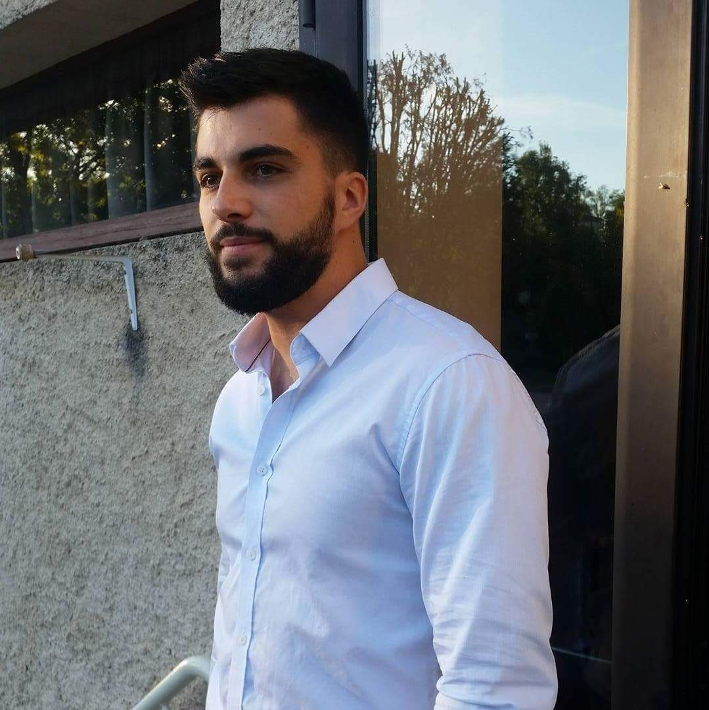

Développeur Web

Je suis Développeur web basé à TOULOUSE, France. passionné par l'informatique je me suis lancé dans le développement web en 2021. Aujourd'hui, j'ai fini ma formation de développeur web OpenClassrooms.
Je suis actuellement en recherche active d'emploi. En attendant de trouver j'effectue des petits projets pour progresser.
N'hésitez pas à me contacter, que ce soit pour un projet, une opportunité d'emploi ou simplement pour échanger.